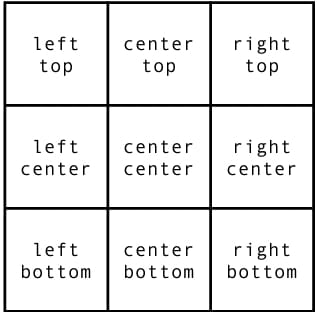

CAPITULO 18
Aprendendo Git e GitHub
Vamos aprender agora oque são os repositorios, tanto os locais quanto
os remotos e qual é a diferença entre eles. E por fim, vamos aprender a colocar nossos
projetos no ar, para que possamos acessar o sites em qualquer lugar com conexão a internet
Repositorio é um local onde se guarda coisas, pode ser um local ou remoto
Eles servem para (guadar, protejer, salvar...) as versões do codigo, e oque iremos usar é o
Git (local) GitHub (remoto).
Mas mesmo com o Git na maquina pode ocorrer algum erro de por exemplo a maquina explodir. ai
já era e vai perder tudo
Outro problema: vamos dizer que eu tenho alguem que queira ver meu resultado, ai iremos usar
o GitHub que é um Repositorio remoto
- Git: vai salvar na minha maquina
Repositorio local

- GitHub: vai salvar na nuvem
Repositorio remoto
Eles são completamente diferentes, mas precisam um do outro para funcionas
Resumo
Neste capítulo, aprendi o básico de como usar o Git e o GitHub. Também aprendi a
colocar o site no ar usando o GitHub, mas irei aprender mais com o decorrer do tempo.
CAPITULO 19
Agora, vamos aprender como usar algumas imagens para complementar visualmente um site, aplicando-as aos
fundos dos nossos elementos HTML utilizando estilos. Também vamos ver como manter
essas imagens adaptáveis ao tamanho do navegador dos nossos visitantes.
Vamos ver sobre o background-position, que é usado para posicionar elementos dentro de uma página de HTML.
A propriedade background-position permite que você controle a posição da imagem de fundo de um elemento. Você
pode especificar essa posição usando valores de palavras-chave, unidades de medida, ou combinações dessas
opções. Aqui estão alguns exemplos:
background-position (no-repeat)

Essa tag vai fazer com que a imagem não se repita e vai deixá-la original.
background-position (repeat x)

Esse código fará com que a imagem se repita apenas horizontalmente, de um lado para o outro.
background-position (repeat y)

Esse código fará com que a imagem se repita apenas verticalmente, de cima para baixo.
RESUMO
Existem outros tipos de background-position que usam as direções com sentido.
Ex


RESUMO

IMAGEM DE FUNDO DO SITE
TAMANHO E POSICIONAMENTO
No body é sempre bom usar o height:100vh; para dizer que o body é 100% da tela
Colocar na posição o center center para a imagem focar sempre no centro
Colocar no-repeat para a imagem não se repetir
BACKGROUND-SIZE
auto: vai fazer a imagem se ajustar automaticamente di acordo com o navegador
contem: 100% da imagem, mas adaptado
pode colocar em PX ou %
cover: vai picotar a imagem, mas vai fazer ela cobrir toda a tela
QUAL É A MELHOR?
depende do que eu quero fazer
Centralização vertical de caixas
Para colocar uma div dentro de outra div e centralizá-la, você deve criar a div "container"
(a div maior) com um id e depois criar uma div "conteudo" (a que vai ficar no centro)
também com um id.
- container: a position vai ser relative
- Conteudo: a position vai ser absolute (com absolute vai poder fazer
configuraçãoes nos lados)
- EX
left: 50% ;
top: 50% ;
Porem com essas coisas todas ainda não vai ficar no centro
ai vai ter que usar a tag
transform: translate(-50%, -50%);
Agora sim fica no centro, como está na imagem acima, em que a div amarela é o conteudo, e a div azul é o
conteudo
background-attachment: fixed;
vai fazer com que a imagem de fundo fique imovel, com apenas o contudo se movemdo